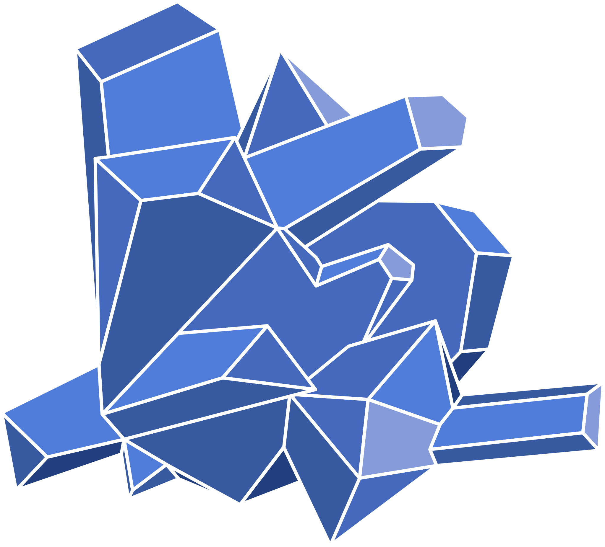

BlueSalt Labs | Simple
Introduction
This is a new implementation of my bluesaltlabs.com website, but this time I'm starting from the basics.
The first commit to this project is a single index.html file.
The second commit adds vite and vue with minimal configuration.
The idea of this project is to review each part of web development one step at a time and re-build my confidence.
I started learning to code because I loved the feeling of making the computer execute increasingly powerful tasks.
In the beginning as a child, I was taught to derive knowledge from books and libraries.
But there were these things called computers that were far more interesting and powerful, and I knew they were the future.
I tinkered with a wide variety of things over the years, learned scripting, game modding, and became adept and just about any application I could find.
But I still struggled to understand how coding itself worked.
That's when I was introduced to Python by a friend of mine named Ian. Suddenly coding made sense and a whole new world of possibility opened.
I went to college for a year to learn coding for real, but flunked out the first year because it was much more difficult than I expected.
After taking a year off I went back to school for 2 more years, but I eventually found a real developer job and dropped out of school entirely.
Learning on the job was always easier anyway.
I spent a few years learning anything and everything I could while working as a full stack web developer for 3 separate companies and a few side gigs.
After 8 years of steady increase, events lead to complete burnout and loss of my software development employment.
For 8 years I wrote and thought about code almost every day, until I burned out and could barely stand to look at a screen for more than 15 minutes at a time.
That was 2 years ago.
I've started to write code regularly again this last month, but it's been one of the most difficult mental challenges I've ever had to face.
This project is intended to build my confidence and remind myself why I started doing this in the first place.
I started this because writing code and "making the computers go beep boop" is something I've been passionate about my entire life.
When I was 8 years old, I wanted to grow up to be an inventor. I had a notebook with written plans and sketches where I would write down my ideas.
As a web developer, I get to be a real-life inventor every single day. The last 2 years ripped that passion from me, and I'm tired of it.
This is a project about starting things over again and remembering my why.
Luke Sontrop
2024.10.16
To Do
- set up a bare-bones implementation of vite + vue.
- set up a bare-bones implementation of styling. Tailwind css?
- Figure out how I want to deploy this project. GitHub? Host files somewhere?
- Add templating, styling, and content from my bluesalt labs main home page.
-
Create functional components:
- Create to do list functionality. Use JSON files, then localStorage
- Create contact app functionality. Use localStorage, then file import/export, then some kind of data storage instead of localStorage (ideally local file based).
- create basic user authentication and roles
- create blog functionality. allow anonymous users and logged in users to post comments.
- create basic CMS / page from data like functionality by creating a set of Project pages with a standardized template, attributes, etc.
- Figure out what additional functionality I'd like to add.
- eventually some kind of data store, and/or back end API system.